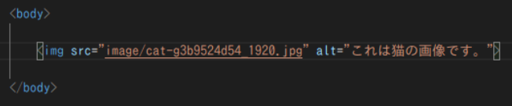
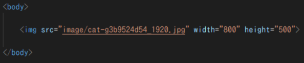
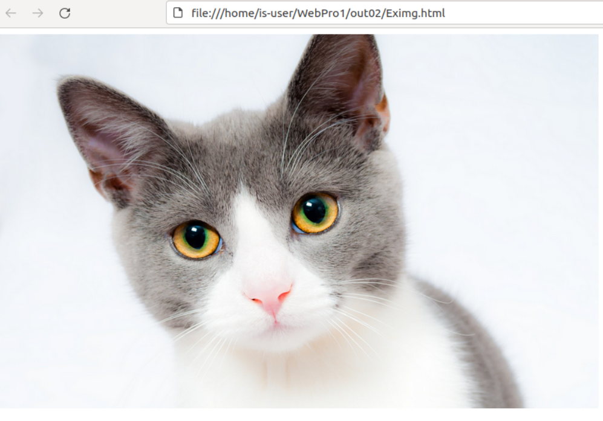
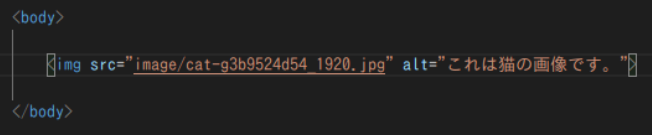

img要素コード例:alt属性
<コード例>
<実行結果>

画像に代替えテキストを指定できました。
実際に読み上げ機能を実行してみると、「これは猫の画像です。」と読み上げられました。
最終更新日:2021 11/8
SERIES No.02-2
contents
はじめに
ここではimg要素についての説明を行います。
要素説明
img要素は画像を表示する要素です。利用するのに必ずセットになるな属性が存在し,src属性と呼ばれます。
以下は、img要素で使用できる属性から重要な属性2点抜き出した物です。
src属性値は、画像ファイルのファイルパスを渡すものです。img要素使用する際に必須属性となります。
画像の代替えテキストを指定し画像を文章で説明する属性です。主な用途は、読み上げ機能を使用するユーザーに対して画像が何を示しているかを伝える時に使用します。
Webページを作成する際に、多数のユーザーの使用を考えて必ず実装する事が勧められている機能です。
HTMLコード例
実際に画像を使用してHTMLコード例、実行結果を見ていきましょう。
img要素コード例:src属性
<コード例>
<実行結果>
Webページ上に画像を表示できました。
img要素コード例:alt属性
<コード例>
<実行結果>
画像に代替えテキストを指定できました。
実際に読み上げ機能を実行してみると、「これは猫の画像です。」と読み上げられました。
おわりに
img要素はWebページを飾ったり、説明の詳細を伝える等に役立つ要素ですね。
便利な分、配置する位置や使用する量を考えないといけないので上手く使いこなしたい所です。
また自分のページを訪れる様々な人に配慮したWebページを作成するのにも非常に役に立つ要素でしたね。
-ソース一覧-
img要素参考サイト
画像借用元